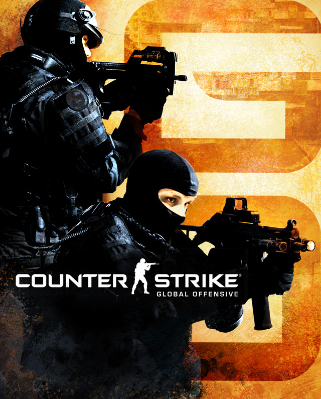

|
Counter-Strike: Global Offensive (CS:GO) is a first-person shooter video game developed by Valve Corporation and Hidden Path Entertainment. It is the fourth game in the Counter-Strike series and was released in August 2012 for Windows, macOS, Xbox 360, and PlayStation 3. The game features two teams, the Terrorists and the Counter-Terrorists, each with their own objectives. The Terrorists must plant a bomb or hold hostages, while the Counter-Terrorists must defuse the bomb or rescue the hostages. The game also features a variety of weapons and equipment, which can be purchased at the start of each round using in-game currency earned from kills and objectives. CS:GO has a competitive esports scene with tournaments and leagues around the world. The game has also been updated over the years with new maps, weapons, and game modes. It is played by millions of players worldwide and has been praised for its tactical gameplay and skill-based mechanics. However, the game has also been criticized for its toxic player base and for the presence of cheaters and hackers. Valve has taken steps to address these issues by implementing anti-cheat measures and introducing systems to report and punish toxic behavior. Learn More |
 |